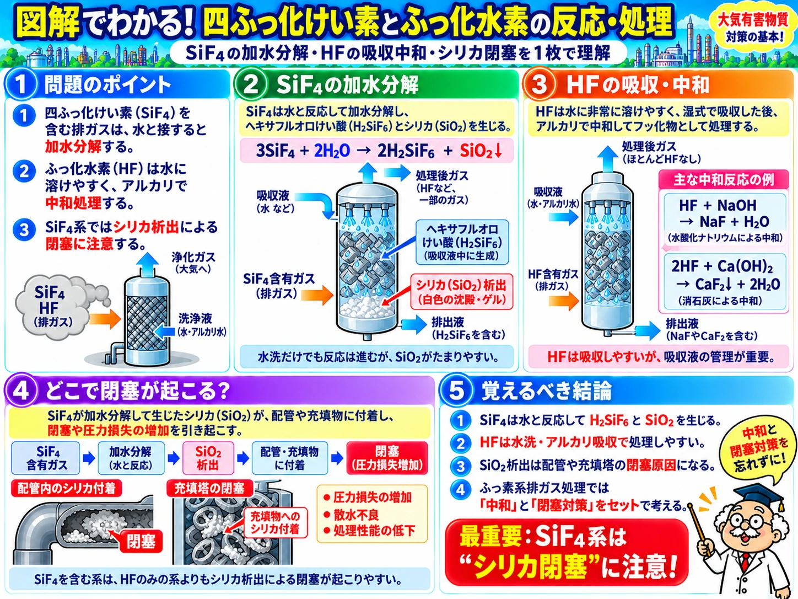

AIR POLLUTION / HAZARDOUS SUBSTANCES
大気有害物質特論。
テーマから学ぶ。
製造工程・ガス吸収・ガス吸着・安全対策・排ガス分析を、27の独自図解で学ぶ。テーマで理解を深めたら、出題傾向分析でも確認できます。
27
VISUAL TOPICS
VISUAL TOPICS
10
YEARS ANALYZED
YEARS ANALYZED
100
QUESTIONS MAPPED
QUESTIONS MAPPED
※ テーマ別図解は過去問の原文・選択肢を転載せず、科学的な内容を独自に整理した学習教材です。
NEW / VISUAL LEARNING
出題年度ではなく、
テーマから理解する。
原料と製造工程、物質の性質、反応・処理を27枚の独自図解で整理。覚えるだけで終わらない、テーマ別の学習ページを用意しました。
図解27テーマの一覧へ ↗
10-YEAR ANALYSIS / H28–R7S/Aランクの徹底分析も見る
過去10年100問を、
ひと目で比較する。
平成28年度から令和7年度までの100問を、主な出題テーマで色分けしました。年度・分野の傾向をつかみ、学習の優先順位を決めよう。
10年H28〜R7
100問全設問を分類
27枚テーマ別図解公開中
POINT 01分析法は30問
ふっ素・塩素/HCl・Pb/Cdの3系統を整理。
POINT 02吸着は9年度で登場
装置・吸着等温式・破過をまとめて学習。
POINT 03設問位置にも傾向
前半は物質と吸収・吸着、後半は処理・分析が中心。
100問マップ YEAR × QUESTION
1マス＝1問。分類は独自の主題整理です。マスを押すと外部サイト「やくチキ」の参考問題が別タブで開きます。
物質・発生源ガス吸収・装置ガス吸着処理・反応特定物質・安全ふっ素分析塩素・HCl分析Pb・Cd分析
スマートフォンでは表を左右にスワイプできます
分野別・出題数
100問を1問1分野で分類した独自集計
物質・発生源20問
ガス吸収・装置17問
特定物質・安全15問
塩素・HCl分析12問
Pb・Cd分析11問
ガス吸着10問
処理・反応8問
ふっ素分析7問
この100問から分かること
01
出題位置を把握する
問1〜2に物質・発生源、問8〜10に分析法が多い。
02
似た装置・測定法を比較する
ガス吸収とガス吸着、AASとICP-MSなどをセットで整理。
03
S/Aランクで復習を絞る
頻出テーマの具体的な優先順位は別の徹底分析ページに掲載。
※ 出題分類は化学資格研究所の独自集計です。問題文・選択肢は転載していません。外部リンク先は「やくチキ」であり、両サイトは提携していません。参考サイト ↗